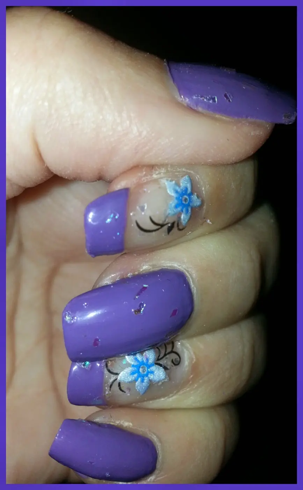

nuova proposta di aprile
Innanzitutto buona domenica a tutti tutti tutti..
Ricordate quando vi ho parlato del nuovo brand che ho visto in questi giorni ANIKA?
(che poi,ripeto, non so se è proprio nuovo nuovo come brand, ma per me lo è ).
Beh comunque, al mio compleanno una mia amica mi ha regalato 2 smaltini belli belli della suddetta marca.
E udite udite non potevo ovviamente non provare ihihih
Ho iniziato a provare uno dei due bellissimi colori, tra l'altro uno dei miei colori preferiti, il viola.
Ho usato poi degli adesivi e un top coat avom per finire il lavoro e abbellire tutto.
Vi mostro la foto:

Colore stupendo, si stende che è una meraviglia e dura molto. Quindi smalti Anika okkeyyyy.. Se po fà ahahah.
Ah, sì, gli adesivi non sono mai stati il mio forte e non sono mai stata capace di attaccarli come si deve :DVabbé tutto sommato questa nail art a me piace tanto perché è particolare ma semplice. Ditemi la vostra :*Buona domenica fanciulle